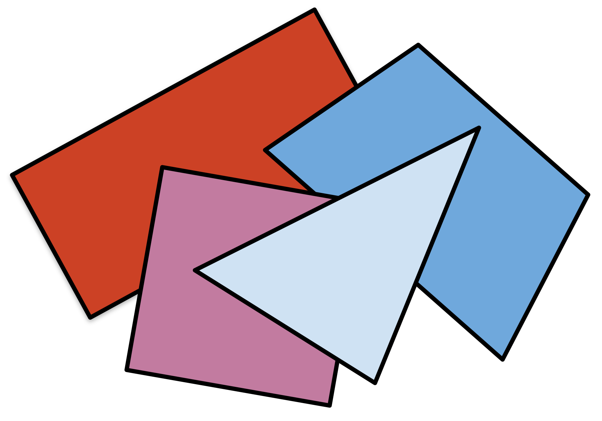

Problem
Make each of the following statements true by filling in the blanks with either:
All, Some, or No.
Justify each choice.
-
__________ rectangles are parallelograms.
-
__________ triangles have three lines of symmetry.
-
__________ trapezoids are quadrilaterals.
-
__________ hexagons have three pairs of parallel sides.
-
__________ rectangles are squares.
-
__________ triangles have two right angles.
Solution
All rectangles are parallelograms.
A parallelogram is defined as a quadrilateral with opposite sides that are parallel. This is true for a rectangle as well. A rectangle is defined as a parallelogram where all its internal angles are right angles.
Some triangles have three lines of symmetry.
An equilateral triangle (a triangle where all sides have equal length) is an example of a triangle with 3 lines of symmetry. However a scalene triangle (all sides have different lengths) is an example of a triangle that has no lines of symmetry.
All trapezoids are quadrilaterals.
All trapezoids have four sides. This is the definition of a quadrilateral.
Some hexagons have three pairs of parallel sides.
A regular hexagon is an example of a hexagon with three pairs of parallel sides.
There are other examples as well such as:

However, it is also possible to draw a hexagon that does not have three pairs of parallel sides such as:
Some rectangles are squares.
A rectangle is a quadrilateral where all its internal angles are right angles. Only if all four sides of a rectangle have the same lengths we will have a square.
No triangles have two right angles.
A triangle has three sides. If you draw two of those sides to form a right angle, it is impossible to add a third side that would complete the triangle and also form a right angle with one of the other two sides. Try it!
(Note: We can show the original solution statement to be true with higher mathematics.)
Teacher’s Notes
As mathematicians, when we are given questions like the ones posed in this problem, we should not be satisfied with just stating an answer; we should try to prove that our answer is correct. In general, it is easier to disprove a statement than prove it. Usually it is sufficient to provide a counter-example to disprove a statement. For example, when we answer part (D), we know that the statement: “All hexagons have three pairs of parallel sides” is not true, since we can find a counter-example (the second diagram in the solution). We also know that the statement: “No hexagons have three pairs of parallel sides” is also not true, since we can find a counter-example (the first diagram in the solution). This leaves us with only one possible true statement in this case which is: “Some hexagons have three pairs of parallel sides.” Providing these diagrams goes beyond simply stating an opinion about hexagons and parallel sides. To be fair, a full proof of the statement would need to be more rigorous, and involve more advanced geometry. However, making any kind of logical argument is a step toward thinking like a mathematician.
What argument could we make beyond our answer for part (B) that a scalene triangle has no lines of symmetry? Here is an informal proof. We can define a line of symmetry as a straight line through a shape such that if you folded a cut out of that shape along the line, the two halves of the shape would match. Let’s assume that there is a scalene triangle that does have a line of symmetry. That line could either be drawn:
from one vertex of the triangle to another vertex of the triangle,
from one side of the triangle to another side of the triangle, or
from one vertex of the triangle to the opposite side of the triangle.
In the first case, the line of symmetry would simply match one of the sides of the triangle, which clearly does not divide the triangle into matching halves. In the second case, a line drawn from one side to another side of the triangle, would divide the original shape into two polygons: a triangle and a quadrilateral.
Clearly it is impossible for these two shapes to match. In the third case, if we try to draw a line from one vertex to the opposite side of the triangle, if this is a line of symmetry, then when we fold along this line, the other two sides of the triangle that do not have the line of symmetry drawn to them must match, and so have the same length. However, the definition of a scalene triangle is that all three sides have different lengths. So there cannot be a line of symmetry in a scalene triangle.